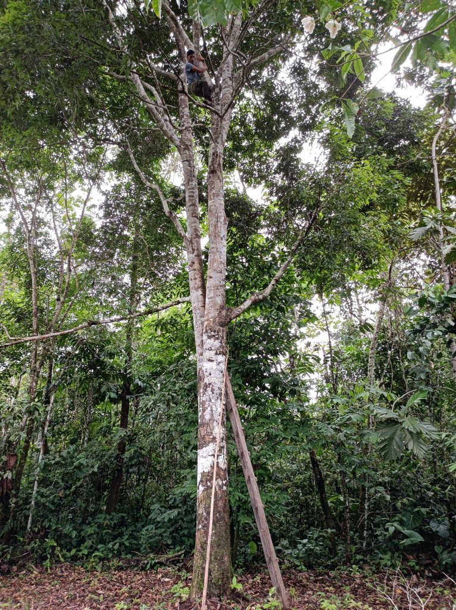

Ishpingo
El ishpingo es un árbol sudamericano apreciado por su madera y aceite esencial. Su madera es densa y resistente, utilizada en la construcción y la ebanistería. Además, se extrae un aceite esencial de sus hojas que se utiliza en la industria cosmética y farmacéutica.
